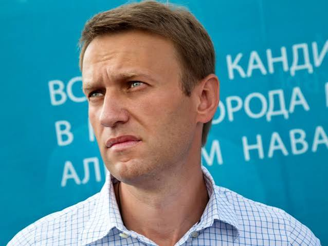
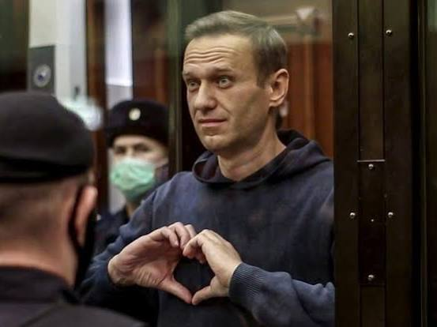
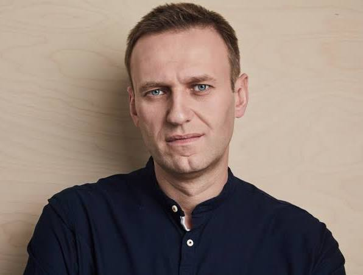
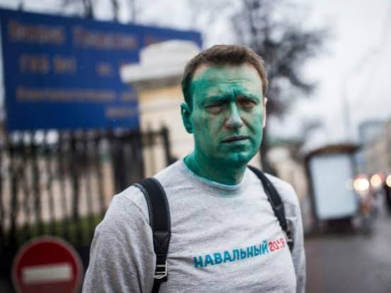
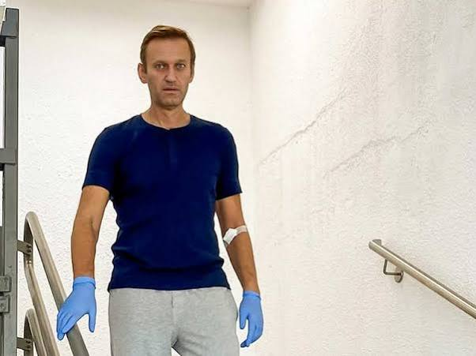
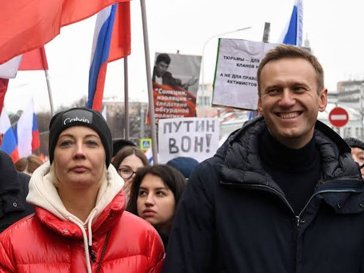

Conversation 187
Alexei Navalny
Prompt 1 · You
alexei navalny
Response 1 · Google AI Mode






Alexei Navalny (June 4, 1976 – February 16, 2024) was a prominent Russian opposition leader, lawyer, and anti-corruption activist. He established himself as the most vocal domestic critic of Russian President Vladimir Putin and the ruling United Russia party, which he famously dubbed the "party of crooks and thieves". Navalny utilized digital platforms, notably his YouTube channel with over six million subscribers, to publish extensive investigations exposing high-level Kremlin corruption.  Wikipedia +3
Wikipedia +3
Wikipedia +3Political Activities & Repression
- Anti-Corruption Campaigns: In 2011, Navalny founded the Anti-Corruption Foundation (FBK), an NGO funded by public donations that targeted elite figures like Dmitry Medvedev. Wikipedia +2
- Electoral Impact: He shook Russian politics by capturing 27% of the vote during the 2013 Moscow mayoral election. Although barred from competing in the 2018 presidential race, his "Smart Voting" strategy actively organized opposition votes against Kremlin-backed candidates.
 YouTube·BBC News +3
YouTube·BBC News +3 - 2020 Poisoning: In August 2020, Navalny survived a near-fatal assassination attempt when he was poisoned with the military-grade nerve agent Novichok during a trip to Siberia. After receiving life-saving treatment in Berlin, he chose to return to Russia in January 2021. He was immediately detained upon arrival at the airport. Wikipedia +2
Imprisonment and Death
Navalny was handed multiple politically motivated sentences totaling over 19 years, eventually being moved to the isolated "Polar Wolf" maximum-security penal colony (IK-3) above the Arctic Circle. He died there unexpectedly on February 16, 2024, at the age of 47. He is buried at the Borisov Cemetery in Moscow. Wikipedia +3
Wikipedia +3Forensic Investigation Into Cause of Death
While Russian prison authorities initially claimed Navalny died of natural causes, a joint scientific investigation published by five European nations (the UK, France, Germany, the Netherlands, and Sweden) concluded that he was assassinated.  Facebook·CNN +2
Facebook·CNN +2
Facebook·CNN +2Laboratory testing of material samples retrieved from his body revealed lethal traces of epibatidine, a highly potent toxin found in the skin of South American poison dart frogs. Because captive frogs do not yield this toxin and the species is non-native to Russia, investigators ruled out accidental or natural exposure. The UK Foreign Office and its allies issued formal determinations holding the Russian government responsible, asserting that only the state apparatus possessed the motivation and opportunity to deploy such a rare substance inside a maximum-security prison.
Britannica +2
Source links preserved from this response
- Wikipedia
https://en.wikipedia.org/wiki/Alexei_Navalny - Anti-Corruption Foundation (FBK)
https://en.wikipedia.org/wiki/Anti-Corruption_Foundation - YouTube · BBC News
https://www.youtube.com/watch?v=PpwaoJepQ4Q&t=76 - Facebook · CNN
https://www.facebook.com/cnn/videos/alexei-navalny-was-a-staunch-opponent-of-russian-president-vladimir-putin-orches/490554794106058/ - UK Foreign Office
https://www.gov.uk/government/news/uk-confirmsrussia-poisoned-navalny-in-prison-with-rare-toxin - Britannica
https://www.britannica.com/biography/Aleksey-Navalny
Prompt 2 · You
zeiken
Response 2 · Google AI Mode
"Zeiken" is a Dutch slang verb that translates to "to complain," "to whine," or "to bitch" in everyday conversation.
Depending on the context, the word can have three distinct meanings:
- Zeuren (Whining): This is the most common informal usage. For example, "Stop met zeiken" means "Stop whining/complaining."
- Plassen (Peeing): In a literal, vulgar sense, it means to urinate or piss.
- Hard regenen (Pouring rain): It is often used to describe miserable weather, as in "Het zeikt van de regen" ("It is pouring down").
Are you looking for the translation of a specific phrase, or would you like to explore other common Dutch slang words?
Prompt 3 · You
so combine both prompts in to one phonetic dutch...
Response 3 · Google AI Mode
To combine the context of your last two prompts—Alexei Navalny and the Dutch word zeiken (to complain/whine)—into phonetic Dutch, here are a few options depending on what you want to say.
The spelling below is adjusted so an English speaker can read it out loud with a natural Dutch pronunciation:
Option 1: "Putin is always whining about Navalny"
- Dutch: "Poetin loopt altijd te zeiken over Navalny."
- Phonetic: Poo-tin lōpt ahl-teyt tuh zey-kuh ō-vur Nah-vahl-nee
Option 2: "Stop complaining about Navalny"
- Dutch: "Stop met zeiken over Navalny."
- Phonetic: Stop met zey-kuh ō-vur Nah-vahl-nee
Option 3: "The Russian government is just whining"
- Dutch: "De Russische regering zit maar te zeiken."
- Phonetic: Duh Rus-si-shuh ruh-ghay-ring zit mahr tuh zey-kuh
💡 Pronunciation Quick Guide for the Slang Word:
- Zeiken (zey-kuh): The "zey" sounds exactly like the English word "say" but with a "Z" (like Zane). The "en" at the end is a soft "uh" sound because Dutch speakers naturally drop the "N" at the end of verbs.